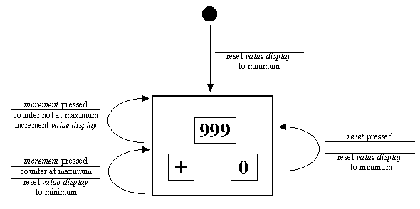
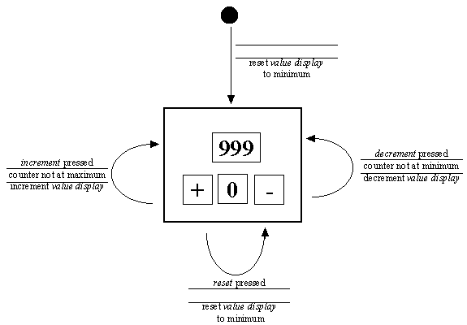
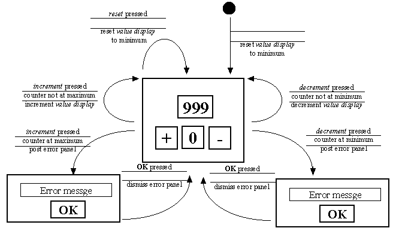
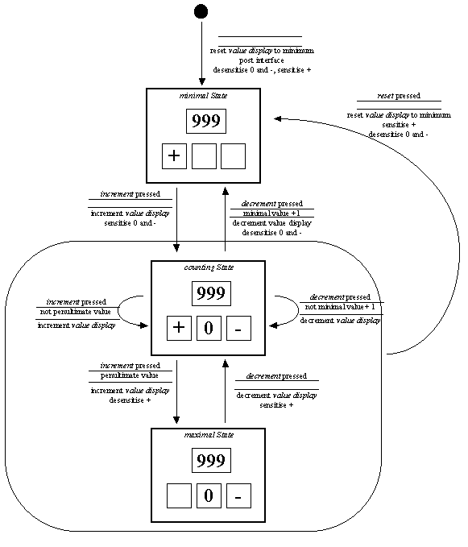

1.3
Application, presentation and translation implementation
1.3
Application, presentation and translation implementation
State Transition Diagrams (STDs) are used to design the interaction which the user will have with the application, and from this the behavior of the user interface. Using the behavior of the mechanical click counter as a starting point, the first version of a possible STD design for the artifact is given in Figure 1.2.

Figure 1.2 ClickCounter - mechanical STD.
A STD consists of one or more states, shown as rectangular boxes, connected by transactions, shown as arrows. The state boxes can be also used to give an indication of the appearance of the interface whilst it is in that state. A solid circle indicates the start of a STD and is associated with an initial transition leading to the initial state of the interface. Transition arrows can have three labels associated with them, the first label is the event which must occur for the transition to be considered. The second label is the precondition which must be true for the transition to be followed. The last label indicates the consequences of taking the transition.
It is possible for the event label to be blank, in which case the transition will be considered as soon as the interface arrives in the state. The precondition will be continually tested and the transition will be taken as soon as it evaluates true. It is also possible for the precondition label to be blank, in which case the transition will be taken as soon as the event occurs. It is also possible for the consequences label to be blank in which case only a state change occurs when the transition is followed.
There is no terminal transition in this design, which would be shown as a transition leading to a bulls eyed circle. Consequently this artifact will continue interacting with the user until it is destroyed using operating system facilities.
A STD design provides an objective model of the state changes which take place as the user interacts with the interface. As such it describes the behavior of an application and of its interface. Further details of STD notation can be found in Appendix C.
The initial transition at the top of this design indicates that the minimum value is always displayed when the click counter user interface is first shown to the user. The main part of the diagram indicates that this design has a single state to which all transactions return. The significant parts of the clickCounter interface are illustrated within the state box. These are: the value display, shown as 999, the increment button, shown as "+" and the reset button, shown as "0". Illustrating the contents of the value display as 999 indicates that it can display any three digits between 000 and 999.
The single state has three possible transitions all of which lead back to itself. The simplest transition is shown on the right of the diagram and is associated with a press of the reset button. The absence of a precondition indicates that this transition will always be followed when the reset button is pressed. The consequence of this transition is to reset the value display to its minimum value. One consideration here might be that the reset button can be pressed whilst the counter is at its minimum value causing it to be reset to its minimum value. The alternative possibility of stating the precondition that value display should not be at its minimum value for the transition to be followed seems to add complexity for no particular benefit.
The other two transitions are associated with the pressing of the increment button. The transition at the top is taken when the value display is not at its maximum value and results in the value display being incremented. The third transition, at the bottom, is followed when the increment button is pressed and the value display is at its maximum this transition results in the value display being reset to its minimum value.
This STD design describes the interface designer's cognitive model of a simple mechanical click counter and can form the basis of the design of the user interface which will be provided for this application. However the provision of a software artifact which models a real-world object need not be limited to the behavior in the real-world. It is possible, and in most cases desirable, for the software model to extend or augment real-world behavior.
The first change from the mechanical click counter's real-world appearance and behavior is to consumer the provision of a decrement button ( - ) which can be used to un-count an occurrence. This change will add functionality to the software application which is not present in the physical artifact, in order to make it more useful.
The second change is to modify the behavior of the counter so that it cannot be incremented beyond the maximum of its range or decrement below the minimum of its range. This change is somewhat arbitrary and has been made in order to introduce some usability considerations in the designs which follow. The first possible STD design for this extended artifact is shown in Figure 1.3.

Figure 1.3 Extended ClickCounter, first STD design.
In this design the increment and decrement buttons have appropriate preconditions which prevent their transitions being followed if the value display is showing its maximum or minimum value respectively. One consequence of this design refinement is that if the counter is at its maximal state the user may press the increment button with nothing apparently happening. If the user is not paying too close attention to the application whilst this happens they may be unaware that their clicks are not being counted. There is a corresponding problem when the counter is at the minimum of its range. One possible solution to this problem is shown in a second design refinement given in Figure 1.4.

Figure 1.4 Extended ClickCounter, second STD design.
This design alerts the user to the unavailability of the counting functionality at the limits of its range by posting a modal error dialog if the appropriate button is pressed. These dialogs should contain an appropriate message explaining to the user why the application is unable to perform the action which they have requested. A modal dialog will allow no interaction with the application which it is posted from, until the dialog is attended to and dismissed. This is accomplished, in this design, by pressing the OK button, which causes the transition back to the counting state to be followed.
The problem with this design is that it allows the user to request an action which the application is unable to fulfill. On the basis that prevention is better than cure the third, and final, design refinement for the clickCounter application interface is given in Figure 1.5.

Figure 1.5 Extended ClickCounter, third STD design.
This design has refined the ClickCounter into three distinct states: the minimal state when the value display is at its minimum, the maximal state when the value display is at its maximum and the counting state in all other cases. When the application is launched the application is placed in the minimal state; in this state the decrement and reset buttons are desensitized. A desensitized button, or any other interface component, is presented to the user in a grayed out state and is not responsive to the users actions; i.e. for a button it cannot be pushed.
In the minimal state only the increment button is sensitive and pressing this button causes the transition to the counting state to be followed. The consequence of this transition is to increment the valueDisplay and to sensitize the decrement and reset buttons. From the counting state further presses of the increment button will increment the valueDisplay until the penultimate value is reached, at which point a further press will cause the transition to the maximal state. In the maximal state the increment button is desensitized, preventing the user from attempting to increment beyond its maximum value.
A similar pattern of events using the decrement button from the maximal state, through the counting state, back to the minimal state can be followed on the STD. The counting and maximal states are grouped together on the STD to share a single transition associated with the reset button. This is interpreted to mean that when the reset button is pressed in either the counting or maximal state the transition which returns the application to the minimal state is followed.
This design prevents the user from requesting an action which the application is unable to provide by dividing the behavioral space of the application into three distinct states.
A state in a State Transition Diagram is defined as a place in the behavioral space of the application which is functionally and visually distinct from all other places.
This final refinement of the design also illustrates another fundamental design principle.
Design Advice
It is better to prevent the user from making 'errors', than to allow them to make the 'error' and have to explain it to them.
The final STD is an explicit specification of the interface which is to be built. It can also be used as the basis of the software design and, once the interface has been constructed, be used to verify that the product implements its specification. It also focuses the developer's attention upon the usability of the product from the outset of the design process and thus hopefully ensures that usable interfaces are constructed. It cannot be guaranteed that interfaces constructed from STDs will be found acceptable by all eventual end users, but it is more likely that an interface with a formal usability design will be found so.
As with all design processes the design notation should be used to explore different possibilities. In this example four different STD designs for the interface were considered. It is clearly preferable for the implications and consequences of different behaviors to be explored at this stage, with pencil and paper, than to construct an interface and discover it to be inadequate or inappropriate.
1.3 Application, presentation and translation implementation